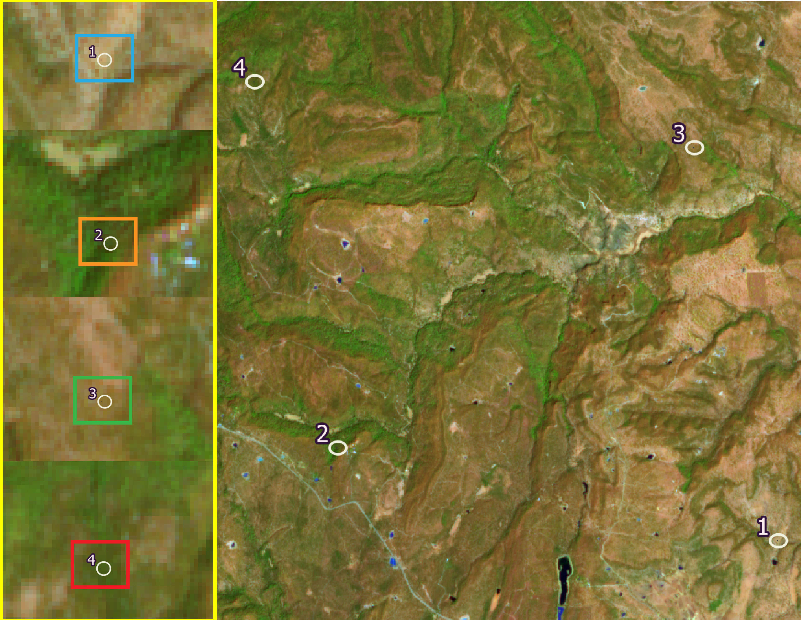

Influencia de la topografía en la distribución de la vegetación del Área Natural Protegida Sierra Fría en Aguascalientes, México.

Introducción
Sosa Ramírez et al menciona que existe
...notas sobre ecología del género Quercus
...El género es considerado taxonómicamente complicado, debido a la gran variabilidad morfológica relacionada con factores ambientales, daños ocasionados a las ramas y a la edad de los individuos; [...] índice estomático Q. eduardii (20,19,25); Q. potosina (44,47,59).
...notas sobre Q. Potosina
...se han reportado resultados donde se reporta una mayor cantidad y calidad en el mantillo, lo que provoca, principalmente en poblaciones de Q. Potosina en comparación con poblaciones de Pinus, una mejor infiltración de agua de lluvia hacia el suelo y una mejor descomposición del mantillo para la disponibilidad de nutrientes; condiciones necesarias para el mantenimiento y desarrollo de la vegetación. [8]👈
...notas sobre Q. rugosa
https://link.springer.com/chapter/10.1007/978-981-19-4200-6_8
https://repositorio.ipicyt.edu.mx/bitstream/handle/11627/57/PerezSuarez.pdf?sequence=1&isAllowed=y
https://mexico.inaturalist.org/taxa/282407-Quercus-potosina/browse_photosbr
http://www.conabio.gob.mx/conocimiento/info_especies/arboles/doctos/31-fagac10m.pdf
https://www.redalyc.org/articulo.oa?id=62101301
https://www.redalyc.org/articulo.oa?id=63438956007
https://www.redalyc.org/articulo.oa?id=57408102
https://www.redalyc.org/journal/674/67452917002/
https://www.redalyc.org/articulo.oa?id=62910101
1. Selección de imágenes
Tabla 1. Descripción de las bandas del sensor MSI.
| Número de banda | Longitud de onda central (nm) | Ancho de banda (nm) | Resolución espacial (m) |
|---|---|---|---|
| 1 | 442.7 | 20 | 60 |
| 2 | 492.7 | 65 | 10 |
| 3 | 559.8 | 35 | 10 |
| 4 | 664.6 | 30 | 10 |
| 5 | 704.1 | 14 | 20 |
| 6 | 740.5 | 14 | 20 |
| 7 | 782.8 | 19 | 20 |
| 8 | 832.8 | 105 | 10 |
| 8a | 864.7 | 21 | 20 |
| 9 | 945.1 | 19 | 60 |
| 10 | 1,373.5 | 29 | 60 |
| 11 | 1,613.7 | 90 | 20 |
| 12 | 2,202.4 | 174 | 20 |
https://sentinel.esa.int/web/sentinel/missions/sentinel-2
Escena descargada:
D:\Documents\GIS\IMG_SAT\S2A_MSIL1C_2023...\
2. Corrección atmosférica
Se utilizó el software QGIS para realizar el procedimiento de corrección atmosférica por el método de Dark Object Substraction (DOS) y para cada una de las bandas de la escena MSI. Previo a la corrección se hizo un recorte de la escena utilizando un polígono rectangular de formato shapefile cuyas coordenadas UTM de extensión se muestran a continuación:
Zona : 13 N
LLC : 742, 340 - 2, 452, 430
URC : 753, 200 - 2, 463, 050
LLC : Lower Left Corner.
URC : Upper Right Corner.
https://ietresearch.onlinelibrary.wiley.com/doi/10.1049/iet-ipr.2017.0295
https://ietresearch.onlinelibrary.wiley.com/doi/10.1049/iet-ipr.2017.0295
https://link.springer.com/chapter/10.1007/978-981-13-9917-6_41
https://www.researchgate.net/publication/236769129_Image-Based_Atmospheric_Corrections_-_Revisited_and_Improved
http://cursosihlla.bdh.org.ar/ET_Local_Regional_2014/Clase_4/1_Teoria/Curso_ET_2014_Teorico_clase4.pdf
https://www.researchgate.net/publication/281667599_Effectiveness_of_DOS_Dark-Object_Subtraction_method_and_water_index_techniques_to_map_wetlands_in_a_rapidly_urbanising_megacity_with_Landsat_8_data
Polígono:
D:\Documents\GIS\IMG_SAT\S2A_MSIL1C_2023...43\ANPSF_2023_ZONA.shp
Salida:
D:\Documents\GIS\IMG_SAT\S2A_MSIL1C_2023...43\DOS_20230313\DOS_20230313
3. Corrección de iluminación por topografía
γi = cos θs cos ηi + sin θs sin ηi (φa - φo)
where γi is the incidence angle, θs is the solar zenith angle; ηi is the slope angle; Фa is the solar azimuth angle and Фo is the slope aspect. [9]👈 From the assessed methods, the C-correction and the empiric–statistic method gave the best results when analyzing the homogeneity of different land covers after correction. [10]👈 The C normalization belongs to a class of non-Lambertian methods [6]. It can be defined as:
ρH = ρT * [(cos θs + ck)÷(cos β + ck)] [11]👈
where k indicates the channel dependence, and ρT = ak + bk cosβ, and ak, bk are calculated from the regression equation of the terrain reflectance versus the local illumination angle (ck = bk/ak). This approach avoids the problems associated with small values of cosβ by adding the term ck in the denominator. The ck accounts for the diffuse radiance component if TOA reflectance data is used, and for residual effects in case of surface reflectance.
Para realizar el procedimiento de corrección de iluminación topográfica por el método de factor C se utilizó el módulo SAGA de QGIS y el Modelo de Elevación de Terreno (MET) obtenido a través del Continuo de Elevaciones Mexicano (CEM) del Instituto de Geografíaa, Estadística e Informática (INEGI). La corrección de iluminación se aplicó sobre las bandas 3, 4, 8 y 11, para lo cual, se requirió de los datos que se muestran en la Tabla 2 y que corresponden a los valores promedio del ángulo solar de la escena MSI.
Tabla 2. Datos de orientación solar de la escena MSI.
| Ángulo cenital (°) | Ángulo azimutal (°) |
|---|---|
| 31.9443 | 138.7315 |
El valor del ángulo cenital se utilizó para obtener el ángulo de elevación solar como se indica a continuación:
sh = 90 - ca
donde:
sh: es el valor del ángulo de elevación solar.
ca: es el valor del ángulo cenital
Entonces, los valores de ángulo solar ingresados en SAGA para realizar la corrección de iluminación fueron el ángulo azimutal y el ángulo de elevación solar.
Finalmente, se ingresaron en SAGA los parámetros de corrección complementarios que se muestran en la Tabla 3.
Tabla 3. Parámetros para la corrección de iluminación por factor C.
| Banda | Max cells | Minnaert |
|---|---|---|
| 3 | 26 | 0.5 |
| 4 | 26 | 0.5 |
| 8 | 225 | 0.5 |
| 11 | 25 | 0.5 |
Como resultado se obtuvo una imagen mejorada, con una reducción notoria de sombras por efecto de la topografía y con mejor contraste entre las coberturas presentes en la escena (Figura 1).

Figura 1. Composición de imagen multibanda RGB (11, 8, 3) de la escena Sentinel-2. (A) Imagen sin corrección de iluminación topográfica; (B) Imagen con iluminación corregida.
https://www.researchgate.net/publication/342323432_PLC-C_An_Integrated_Method_for_Sentinel-2_Topographic_and_Angular_Normalization
https://www.sciencedirect.com/science/article/abs/pii/S0303243411000584#preview-section-snippets
https://www.researchgate.net/publication/259275014_Topographic_correction_of_satellite_images_Theory_and_application
https://www.sciencedirect.com/science/article/abs/pii/S0303243411000584
https://www.sciencedirect.com/science/article/abs/pii/S0034425711000411
https://www.researchgate.net/publication/270895671_Review_of_Different_Topographic_Correction_Techniques_for_Satellite_Imagery
https://www.sciencedirect.com/science/article/pii/S0303243422000423
https://www.sciencedirect.com/science/article/pii/S0303243422000423#b0220
https://www.researchgate.net/publication/301677429_CORRECCION_TOPOGRAFICA_A_IMAGENES_LANDSAT_POR_CLASES_DE_PENDIENTE
https://www.researchgate.net/publication/361944391_Como_realizar_correcciones_topograficas_a_imagenes_satelitales_con_QGIS
Datos de elevación:
D:\Documents\GIS\AGS_ANPSF\ANPSF_2023\MED_20230313_ANPSF.tif
Salida:
D:\Documents\GIS\IMG_SAT\S2A_MSIL1C_2023...\C3_20230313\C_20230313_B0stack_raster.tif
4. Índices de vegetación
The main applications for remote sensing of vegetation are based on the following light spectra: (i) the ultraviolet region (UV), which goes from 10 to 0.38 µ (ii) the visible spectra, which are composed of the blue (0.450–0.495 µ), green (0.495−0.57 µ), and red (0.620–0.75 µ;) wavelength regions; and (iii) the near and mid infrared band (0.85–1.7 µ).
The NDVI is a dimensionless index that monitors vegetation dynamic by computing the difference between visible and near-infrared reflectance to estimate the concentration of greens vegetation in a particular area (Weier & Herring, 2000). [11]👈
Con los datos de la banda 4 (0.6646 µ) y 8 (0.8328 µ) se generaron dos índices de vegetación: a) el índice de Vegetación de Diferencias Normalizado (NDVI) y b) el Índice de Vegetación con Ajuste del Suelo (SAVI) que corrige los valores de reflectancia de acuerdo al efecto del suelo. Los índices se construyeron utilizando las siguientes expresiones:
NDVI = ( n - r ) ÷ ( n + r )
SAVI = ( n - r ) ÷ [ ( n + r + 0.5 ) ( 1 + 0.5 ) ]
Donde:
n: banda infra-rojo cercano (b8).
r: banda rojo (b4)
La Figura 2 muestra la forma de la distribución de los valores del NDVI, en contraste con lo que se observa en los valores del SAVI.
 Figura 2. Se observa el contraste entre la
distribución de los datos del SAVI y del NDVI.
Figura 2. Se observa el contraste entre la
distribución de los datos del SAVI y del NDVI.
Es notoria la diferencia en la distribución de los datos de los índices, así como su respuesta en las firmas espectrales generadas. En la Figura 3 se muestran 4 firmas espectrales que corresponden a 4 puntos geográficos dentro de la zona de estudio:
firma 1 (azul): pastizal.
firma 2 (naranja): bosque verde en cañada.
firma 3 (verde): pastizal-matorral.
firma 4 (rojo): bosque verde en cañada.
En la Figura 3 se muestran cuatro firmas espectrales que se construyeron con los datos de las bandas 4 y 8 del MSI y con los valores del NDVI y del SAVI.
 Figura 3. Los valores del SAVI al parecer discriminan mejor aquellas coberturas localizadas en zonas de poca vegetación (firmas 1 y 3), diferenciándolas de aquellas coberturas en zonas de mayor cobertura forestal (firmas 2 y 4).
https://www.mdpi.com/2072-4292/13/18/3550
https://www.bing.com/search?q=r+image%2C+sentinel+DOS+correction+atmospheric&qs=n&form=QBRE&sp=-1&lq=0&pq=r+image%2C+sentinel+dos+correction+atmospheric&sc=1-44&sk=&cvid=32410D588CFF48A4B8B0F6D8607F0AD1&ghsh=0&ghacc=0&ghpl=
https://www.researchgate.net/publication/327558326_Apuntes_de_Teledeteccion_Indices_de_vegetacion
https://geoinnova.org/blog-territorio/analisis-de-indices-de-vegetacion-en-teledeteccion/#Indice_GLI_Green_Leaf_Index
https://www.auravant.com/blog/agricultura-de-precision/indices-de-vegetacion-y-como-interpretarlos/
https://mappinggis.com/2020/07/los-6-indices-de-vegetacion-para-completar-el-ndvi/#SIPI_Indice_de_Pigmentacion_Insensible_a_la_Estructura
https://www.nv5geospatialsoftware.com/docs/vegetationindices.html
https://www.usgs.gov/special-topics/remote-sensing-phenology/science/vegetation-indices#:~:text=Vegetation%20Indices%20Remote%20sensing%20phenology%20studies%20use%20data,leaves%20strongly%20absorb%20wavelengths%20of%20visible%20%28red%29%20light
https://www.hindawi.com/journals/js/2017/1353691/
https://www.sciencedirect.com/topics/earth-and-planetary-sciences/vegetation-index
https://www.hindawi.com/journals/js/2017/1353691/
https://books.google.cl/books?id=Yb6xIldfoT0C&pg=PA105&lpg=PA105&dq=indices+de+vegetacion&source=bl&ots=oQCBrrEFZn&sig=NKgMPm82MtfImqfUDZU_HxGW9fw&hl=es&sa=X&ei=4wo-fvyJqiE2QXrnYH4DQ&ved=0CDYQ6AEwAQ#v=onepage&q=indices%20de%20vegetacion&f=false
Salida:
D:\Documents\GIS\IMG_SAT\S2A_MSIL1C_2023...\INDEX VVI

5. Clasificación por conglomerados
Clasificación k-means
Se trata de un algoritmo de clasificación iterativo en el que se definen n clases dentro de las que serán categorizados los elementos de un conjunto ubicados en un espacio vectorial. El mecanismo del ...algoritmo consiste en crear n centroides aleatorios dentro del espacio muestral. Posteriormente el algoritmo mide las "distancias" entre cada centroide y los elementos más cercanos detectados en el espacio vectorial, hecho esto, el algoritmo recalcula la posición de cada centroide y los traslada a una posición promedio con respecto a los puntos más cercanos y, una vez más, recalcula las distancias a los puntos desde la nueva posición de los centroides. Este proceso se repite de manera iterativa hasta que las posiciones de los centroides se estabilizan y los centroides dejan de ajustarse como se muestra en la animación de la Figura 4. Fig 4. Representación animada del funcionamiento del algoritmo de
clasificación k-means.
Fig 4. Representación animada del funcionamiento del algoritmo de
clasificación k-means.
Con los datos del sensor MSI se realizaron dos procesos de clasificación no supervisada, el primero sobre la imagen NDVI y otro sobre la imgen SAVI de lo que se obtuvieron dos imágenes clasificadas:
a) clases NDVI
b) clases SAVI
En el proceso se utilizó el algoritmo de clasificación por conglomerados k-means con los parámetros que a continuación se describen:
Número de clases: 5
Iteraciones: 50
La descripción de las clases obtenidas se muestran en la Tabla 5, donde podemos observar el conteo de pixeles que fueron asignados en cada una de las cinco clases o categorías. Las cinco clases representan distintos tipos de cobertura vegetal en función del verdor vegetal expresado a través de los índices de vegetación construidos a partir de la relación entre las bandas 4 (664.6 nm) y 8 (832.8 nm).
Tabla 5. Descripción de las clases obtenidas por medio de la clasificación k-means.
| Clase | Conteo NDVI - SAVI | Descripción | |
|---|---|---|---|
| PTZ | 22,238 | 83,184 | Pastizal |
| PTZ-MAT | 177,455 | 155,173 | Paztizal-Matorral |
| MAT | 86,413 | 143,471 | Matorral |
| BQM | 160,301 | 103,388 | Bosque Mixto |
| BQV | 75,217 | 37,133 | Bosque Verde |
A partir de las cinco clases o categorías obtenidas se calcularon las estadísticas por zona (clase) de los dos índices de vegetación (Tabla 4).
Tabla 4. Estadísticas de los índices de vegetación en cada clase o categoría obtenida.
| Clase | NDVI media-desv | SAVI media-desv | ||
|---|---|---|---|---|
| PTZ | 0.1095 | 0.0143 | -0.0621 | 0.0067 |
| PTZ-MAT | 0.1401 | 0.0081 | -0.0452 | 0.0045 |
| MAT | 0.1671 | 0.0086 | -0.0300 | 0.0046 |
| BQM | 0.2017 | 0.0125 | -0.0127 | 0.0055 |
| BQV | 0.2580 | 0.0261 | 0.0099 | 0.0105 |
Se observa una menor amplitud en los valores del SAVI con respecto al NDVI, así como también una menor desviación con respecto a la media.
Notamos que el conteo de pixeles identificados en cada clase difiere notablemente entre las clasificaciones obtenidas a partir del NDVI y del SAVI. En la clasificación SAVI hay un mayor conteo de pixeles en las categorías Bosque Mixto y Bosque Verde y en contraste se observa un menor conteo de pixeles en las categorías Matorral, Pastizal-Matorral y Pastizal (Figura 5).
 Fig 5. Clasificación obtenida a partir del índice NDVI
(izquierda); clasificación a partir del SAVI (derecha);
al centro se muestra la composición multibanda en RGB (11,8,3)
de la imagen obtenida por Sentinel-2. Los círculos indican zonas de pastizal que
fueron mejor clasificadas a partir del SAVI.
Fig 5. Clasificación obtenida a partir del índice NDVI
(izquierda); clasificación a partir del SAVI (derecha);
al centro se muestra la composición multibanda en RGB (11,8,3)
de la imagen obtenida por Sentinel-2. Los círculos indican zonas de pastizal que
fueron mejor clasificadas a partir del SAVI.
En un primer análisis visual fotointerpretativo, los resultados de la clasificación hecha sobre el SAVI parecen describir mejor las coberturas vegetales presentes en la zona de estudio. La clasificación NDVI detecta una mayor cantidad de pixeles dentro de las categorías de menor verdor, mientras que clasifica muy pocas zonas como Bosque Verde. En contraste, la clasificación SAVI clasifica una mayor cantidad de pixeles en las categorías de vegetación con mayor verdor.
https://www.ncbi.nlm.nih.gov/pmc/articles/PMC5148156/
https://macwright.com/2013/02/18/literate-jenks.html
https://stackoverflow.com/questions/54841674/plot-kmeans-clusters-and-classification-for-1-dimensional-data
https://www.dannyadam.com/blog/2019/07/kmeans1d-globally-optimal-efficient-1d-k-means/
https://pypi.org/project/kmeans1d/
https://arxiv.org/abs/1701.07204
https://www.scielo.org.mx/scielo.php?script=sci_arttext&pid=S1405-04712011000300004
Salida:
D:\Documents\GIS\IMG_SAT\S2A_MSIL1C_2023...\CLASSIFY_LANDCOVER\kmeans ivv.hdr
D:\Documents\GIS\IMG_SAT\S2A_MSIL1C_2023...\CLASSIFY_LANDCOVER\roi ivv to tif.tif
6. Evaluación de la clasificación con drones
🚧en construcción🚧. 😃
Georreferenciación de imágenes.
Estimación del Índice de Área Foliar.
-------------------
7. Análisis de regresión
🚧en construcción🚧. 😃
Se trabajó con dos métodos de regresión: a) regresión logística multinomial y b) regresión lineal múltiple.
Regresión logística multinomial
El análisis de regresión logística multinomial trabaja sobre una variable respuesta de naturaleza categórica que en este caso corresponden a las clases obtenidas a partir de la clasificación k-means sobre el SAVI; y se cuenta además con tres variabes predictivas: dos continuas (altitud y pendiente) y otra categórica (orientación). La variable orientación se particionó en 5 categorías: Norte, Sur, Este, Oeste y Plano. El análisis busca medir alguna influencia significativa de las variables topográficas predictivas sobre la distribución de las clases de vegetación.
Tabla 6. Resultados del modelo de regresión logística.
Coeficientes.
| Clase | Intercept | Slope | N | P | S | W | Alt |
|---|---|---|---|---|---|---|---|
| BQM | -7.8599 | 0.0259 | 0.1538 | 0.1237 | -0.0853 | -0.1361 | 0.0027 |
| BQV | -13.2009 | 0.0519 | 0.7552 | 0.4700 | -0.6143 | -0.6639 | 0.0040 |
| MAT | -17.0046 | 0.0431 | 0.4834 | 0.2286 | -0.2697 | -0.3782 | 0.0059 |
| PTZ | 9.7653 | -0.0438 | -0.1571 | -0.3603 | 0.0320 | -0.2474 | -0.0037 |
| Clase | Intercept | Slope | N | P | S | W | Alt |
|---|---|---|---|---|---|---|---|
| BQM | 4.8785e-05 | 0.0002 | 0.0046 | 1.4540e-04 | 0.0047 | 0.0049 | 2.4260e-06 |
| BQV | 4.0483e-05 | 0.0003 | 0.0035 | 2.3463e-05 | 0.0012 | 0.0017 | 4.2492e-06 |
| MAT | 7.6674e-05 | 0.0002 | 0.0056 | 6.8717e-05 | 0.0048 | 0.0048 | 2.8465e-06 |
| PTZ | 1.9293e-05 | 0.0003 | 0.0021 | 1.8668e-04 | 0.0049 | 0.0034 | 2.7656e-06 |
Valores exponenciales de los odds: riesgo de ocurrencia
| Clase | Intercept | Slope | N | P | S | W | Alt |
|---|---|---|---|---|---|---|---|
| BQM | 3.8589e-04 | 1.0262 | 1.1663 | 1.1317 | 0.9182 | 0.8726 | 1.0027 |
| BQV | 1.8488e-06 | 1.0532 | 2.1282 | 1.6001 | 0.5409 | 0.5148 | 1.0040 |
| MAT | 4.1208e-08 | 1.0440 | 1.6216 | 1.2569 | 0.7635 | 0.6850 | 1.0059 |
| PTZ | 1.7419+04 | 0.9571 | 0.8545 | 0.6974 | 1.0326 | 0.7807 | 0.9962 |
En la Figura 6 se puede observar que la probabilidad de ocurrencia cambia con la altitud; la probabilidad de que se presente MAT, BQM o BQV se incrementa con el aumento en los valores de la pendiente y es ligeramente superior en orientación Norte. La vegetación de PTZ-MAT presenta mayor probabilidad de ocurrencia en pendientes medias cuando la altitud es mínima, pero cambia a pendientes bajas conforme aumenta la altitud. En el caso del PTZ se observa un máximo en el valor de las probabilidades de ocurrencia cuando los valores de la pendiente son mínimos con bajas altitudes.
Fig 6. Probabilidades de ocurrencia de las diferentes clases de vegetación para diferentes valores de la pendiente, altitud y orientación del terreno..
Regresión lineal múltiple
Se desarrolló un modelo de regresión múltiple donde la variable respuesta es continua y corresponde al Índice de Vegetación con Ajuste de Suelo (SAVI). Del mismo modo se usaron dos variables predictivas continuas: pendiente (slope) y orientación del terreno (aspect).
savi ~ slope + aspect + (slope * aspect)
Donde:
savi: es el índice con ajuste de suelo (variable respuesta).
slope: es el porcentaje de pendiente del terreno que va de 0 a 60.
aspect: es la orientación del terreno que va de 0 = Norte hasta 180 = Sur.
Tabla 7. Resultados del modelo de regresión lineal múltiple.
Coeficientes:
| Estimado | Error estándar | t | valor p | |
|---|---|---|---|---|
| Intercept | -3.973-2 | 1.266-4 | -313.77 | 0.0000 |
| slope | 4.912-4 | 4.051-6 | 121.25 | 0.0000 |
| aspect | -3.374-5 | 1.164-6 | -28.98 | 0.0000 |
| slope:aspect | -7.580-7 | 3.895-8 | -19.46 | 0.0000 |
Para modelar el efecto de interacciones se construyó la siguiente superficie de respuesta:
s = -4.139-2 + (9.297-4 x1) + (-1.116-4 x2) + (-6.626-6 x12) + (4.103-7 x22) + (-8.210-7 x1 x2)
La Figura 8 muestra la respuesta del SAVI con respecto a la orientación y la pendiente. Los valores pequeños de la pendiente corresponden a valores bajos de respuesta de la vegetación a través de los diferentes ángulos de orientación del terreno; en contraste, cuando los valores de la pendiente aumentan se presenta una respuesta superior de la vegetación y aún ligeramente mayor hacia terrenos con orientación Norte.
Fig 7. Gráfica interactiva. Superficie de respuesta donde se observa la interacción de la pendiente y la orientación sobre la respuesta del SAVI. El eje x representa los valores de la pendiente; el eje y representa los valores de orientación del terreno donde 0 indica la orientación Norte y 180 la orientación Sur. Se observa que el SAVI crece con el aumento de la pendiente y principalmente en terrenos con orientación Norte.
https://www.r-bloggers.com/2020/05/multinomial-logistic-regression-with-r/ <-- OJO: revisar
https://r-statistics.co/Multinomial-Regression-With-R.html <-- OJO: revisar
https://stats.oarc.ucla.edu/r/dae/multinomial-logistic-regression/
https://stats.oarc.ucla.edu/other/examples/icda/
https://www.ibm.com/docs/es/spss-statistics/saas?topic=regression-multinomial-logistic
https://www.ibm.com/es-es/topics/monte-carlo-simulation#:~:text=La%20simulaci%C3%B3n%20Montecarlo%2C%20tambi%C3%A9n%20conocida%20como%20el%20m%C3%A9todo,estimar%20los%20posibles%20resultados%20de%20un%20suceso%20incierto.
https://graphics.stanford.edu/courses/cs233-21-spring/ReferencedPapers/CCA_Weenik.pdf
https://www.library.virginia.edu/data/articles/getting-started-with-multivariate-multiple-regression
https://stats.oarc.ucla.edu/r/dae/canonical-correlation-analysis/
https://chem.libretexts.org/Bookshelves/Analytical_Chemistry/Chemometrics_Using_R_(Harvey)/09%3A_Gathering_Data/9.06%3AUsing_R_to_Model_a_Response_Surface
8. Análisis y discusión de resultados
🚧en construcción🚧. 😃